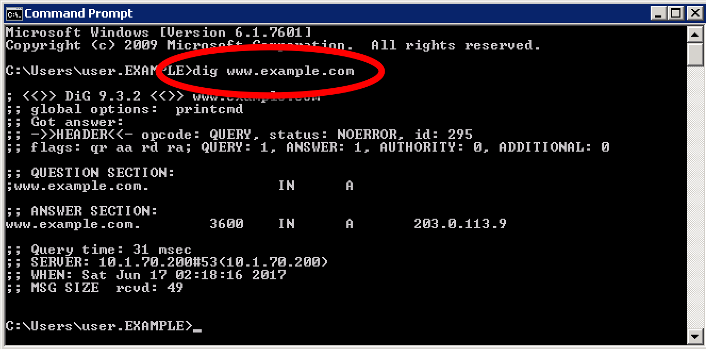
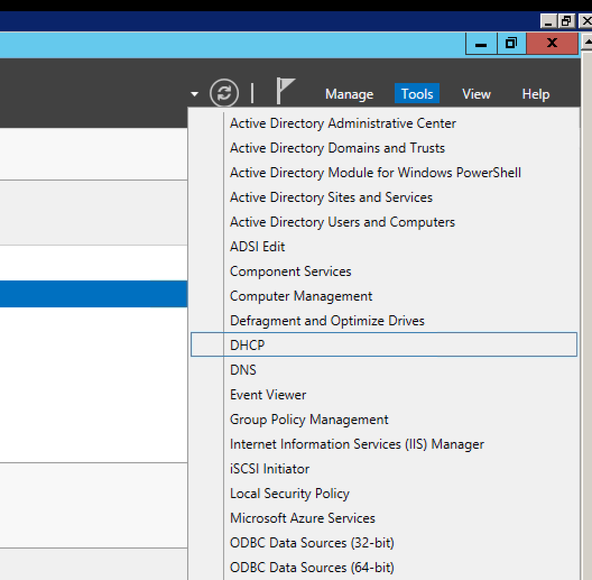
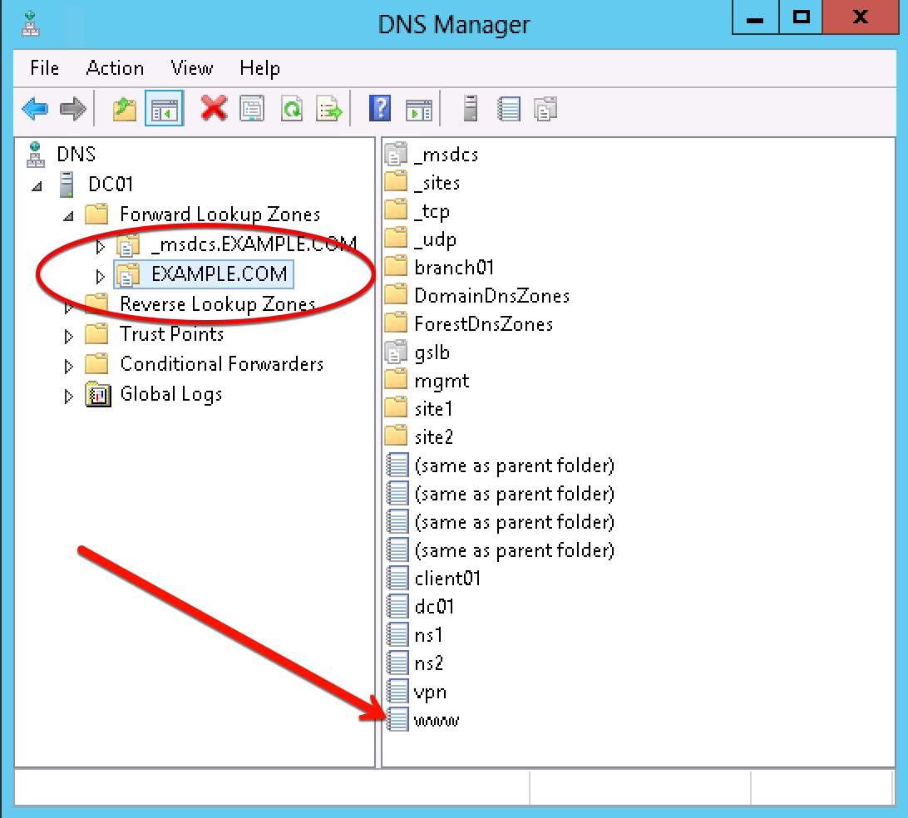
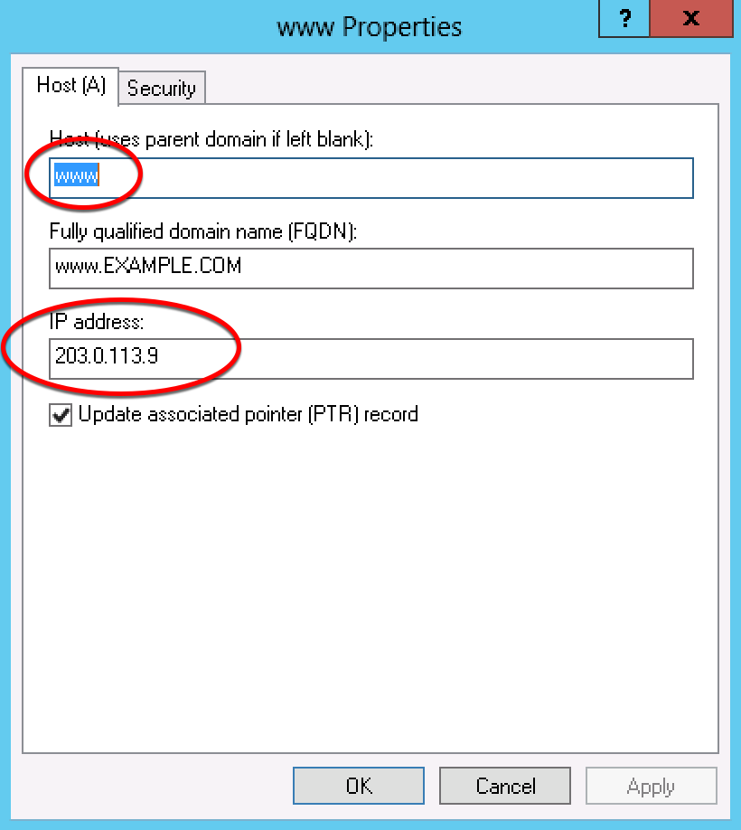

Orientation¶
Open the command prompt on the Windows jumpbox execute the command:
dig www.example.com. Examine the output, and notice that an A record exists.
Open Internet Explorer and access www.example.com. Note that you accessed a web server in site1.
TODO - Create content server page and add screenshot
RDP to the domain controller using: EXAMPLE\user, password Agility1.
Start –> Remote Desktop Connection –> 10.1.70.200.
Click on Server Manager, and in the top right corner choose Tools and then DNS
Double click on EXAMPLE.COM and examine DNS records
- Connect to https://bigip1.site1.example.com and examine configuration of the virtual server
(203.0.113.9) and corresponding pool
- Connect to https://bigip1.site2.example.com and examine the virtual servers. List the virtual servers
(198.51.100.41)